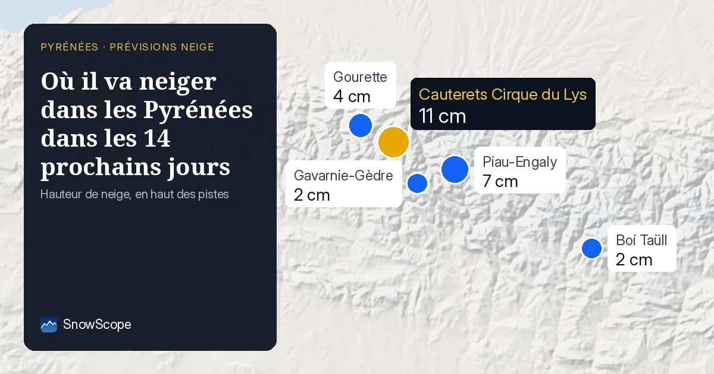
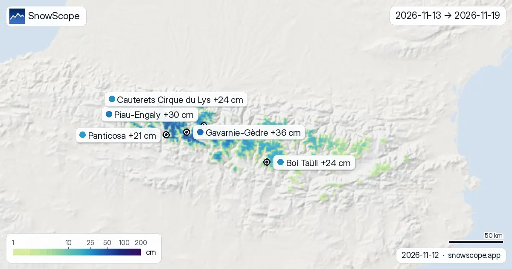
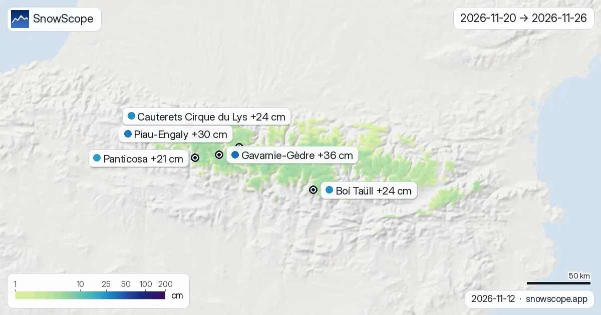

Où il va neiger dans les Pyrénées dans les 14 prochains jours : Gavarnie-Gèdre en tête avec 36 cm
Les Pyrénées verront l'essentiel de leur neige arriver à la mi-novembre, les montagnes au-dessus de 2 500 m recevant environ 26 cm sur les 14 prochains jours. Gavarnie-Gèdre s'en tirera le mieux parmi les stations suivies, accumulant environ 36 cm (les deux prévisions mondiales varient de 15 cm à 57 cm), répartis entre une première semaine chargée et des jours plus calmes après.
Consultez les prévisions neige en temps réel pour Gavarnie-Gèdre sur l'application SnowScopeHauteurs de neige, alertes poudreuse et carte 3D, gratuitement.
Quelles stations reçoivent le plus de neige
Gavarnie-Gèdre en tête avec environ 36 cm sur la quinzaine : 31 cm arrivent la première semaine et 5 cm tombent au cours de la deuxième semaine. Son jour le plus chargé est le 19 novembre, avec environ 10 cm prévus.
Piau-Engaly suit avec environ 30 cm au total (25 cm la première semaine, 5 cm la deuxième semaine), culminant le 19 novembre à 8 cm. Cauterets Cirque du Lys et Boí Taüll reçoivent tous deux environ 24 cm, tandis que Panticosa et Gourette en voient respectivement 21 cm et 20 cm. Les six stations concentrent leur neige sur les sept premiers jours.
| Station | Hauteur de neige | Neige fraîche, 72 h | Attendu, jours suivants | Sommet |
|---|---|---|---|---|
| Gavarnie-Gèdre | 2 cm | 2 cm | 22 cm | 2 283 m |
| Piau-Engaly | 7 cm | 16 cm | 29 cm | 2 527 m |
| Boí Taüll | 2 cm | 4 cm | 16 cm | 2 747 m |
| Cauterets Cirque du Lys | 11 cm | 6 cm | 33 cm | 2 420 m |
| Panticosa | 0 cm | 0 cm | 15 cm | 2 202 m |
| Gourette | 4 cm | 5 cm | 25 cm | 2 453 m |

Quand tombe la neige : un schéma concentré au début
Les deux tiers de la neige totale de la région arrivent à la fin de la première semaine. Le jeudi 19 novembre est le jour phare : sur les 53 stations étudiées, 17 en enregistreront 5 cm ou plus, Gavarnie-Gèdre atteignant 10 cm. Après cette date, la neige nouvelle chute drastiquement.
La deuxième semaine (20–26 novembre) contribue moins d'un tiers du total de la quinzaine. Attendez-vous à des chutes occasionnelles légères plutôt qu'à l'accumulation des premiers jours.

Épaisseur de neige selon l'altitude
L'altitude joue un rôle décisif. Au-dessous de 1 500 m, peu ou pas de neige n'est prévue. Entre 1 500 m et 2 000 m, la médiane est d'environ 1 cm, montant à 3 cm dans les zones plus enneigées de cette bande. Entre 2 000 m et 2 500 m, la prévision type est 12 cm, avec les zones les plus touchées atteignant 20 cm ou plus.
Au-dessus de 2 500 m, c'est où la neige s'accumule le plus : une prévision type de 26 cm, le quart le plus enneigé de cette bande en voyant 38 cm ou plus. Sur l'ensemble de la région des Pyrénées, environ 1 369 km² de terrain recevront 20 cm ou plus sur les deux semaines ; environ 121 km² dépasseront 50 cm.

Incertitude et implications
Les deux prévisions s'accordent sur le schéma principal mais divergent sur les quantités. Pour Gavarnie-Gèdre, l'une prévoit 15 cm et l'autre 57 cm—un écart important qui reflète une véritable incertitude prévisionnelle au-delà de deux semaines. La tendance (première semaine chargée, deuxième semaine plus légère) est robuste ; les totaux quotidiens individuels sont moins certains.
Les prévisions peuvent évoluer à chaque mise à jour, particulièrement à partir du jour 8 et après. Les cartes sont redessinées chaque matin, consultez-les à nouveau la veille de votre départ.
Lire les cartes et planifier votre sortie
La carte de deux semaines montre l'accumulation totale sur toute la période sur une seule échelle de couleurs (vert clair pour une légère couche, bleu profond et violet pour 50+ cm). Les cartes de la première semaine et deuxième semaine divisent le même schéma, vous permettant de voir où l'action est concentrée.
Utilisez la carte de la première semaine pour choisir vos dates ; la carte de la deuxième semaine est un guide pour les régions qui pourraient recevoir de la neige supplémentaire mais ne doit pas guider votre calendrier. Souvenez-vous que le niveau à 0 °C (la limite pluie–neige) peut décaler de plusieurs centaines de mètres, changeant où les précipitations tombent sous forme de neige plutôt que pluie—consultez la carte à nouveau la veille de votre départ.
Conseils aux skieurs
- Visez 13–19 novembre pour le meilleur rapport neige-jour ; concentrez-vous sur les altitudes au-dessus de 2 000 m où la majorité de la neige reposera.
- Si la prévision bascule significativement avant votre départ, le schéma de la première semaine est plus fiable que celui de la deuxième semaine ; planifiez en conséquence.
- Avant toute sortie hors-piste ou ski de rando, consultez le bulletin officiel d'avalanches (liens disponibles sur les sites des stations).
- La carte neige montre le terrain ; elle ne confirme pas si une station est ouverte. Vérifiez l'état des remontées et des pistes sur le site de chaque station avant de voyager.
- La neige de début de saison aux altitudes basses peut être fine ou irrégulière ; les rochers peuvent être proches de la surface. Skiez prudemment sur les pentes au-dessous de 2 000 m.
À propos de ces chiffres
Les hauteurs de neige des stations sont la neige la plus épaisse sur le haut du domaine à la date indiquée ; ce sont des estimations pour une zone, pas une mesure en un point. Les prévisions peuvent changer. Consultez toujours le bulletin d'avalanche officiel avant le hors-piste.
Bulletins d'avalanche officiels: Météo-France / Meteocat / AEMET
Citer ce bulletin
Pour la recherche, l'enseignement ou la presse : chiffres et graphiques réutilisables librement sous CC BY 4.0 avec cette citation.
SnowScope (2026), Où il va neiger dans les Pyrénées dans les 14 prochains jours : Gavarnie-Gèdre en tête avec 36 cm, https://snowscope.app/blog/fr/2026/11/pyrenees-2-week-snow-forecast-maps-12-november-2026.html, consulté le 2026-11-12
SnowScope (Atlas Labs). (2026, November 12). Où il va neiger dans les Pyrénées dans les 14 prochains jours : Gavarnie-Gèdre en tête avec 36 cm. SnowScope snow reports. https://snowscope.app/blog/fr/2026/11/pyrenees-2-week-snow-forecast-maps-12-november-2026.html
BibTeX
@misc{snowscope2026pyrenees2weeksnowforecas,
author = {{SnowScope (Atlas Labs)}},
title = {Où il va neiger dans les Pyrénées dans les 14 prochains jours : Gavarnie-Gèdre en tête avec 36 cm},
year = {2026},
month = nov,
howpublished = {\url{https://snowscope.app/blog/fr/2026/11/pyrenees-2-week-snow-forecast-maps-12-november-2026.html}},
note = {Published 2026-11-12 18:27 UTC; accessed 2026-11-12}
}· CC BY 4.0 · Méthodes, données et outils →
Gavarnie-Gèdre : neige et température selon l'altitude, cet hiver vs l'hiver dernier (outils) →
Suivre Gavarnie-Gèdre
Gratuit : un message quand la neige arrive, et la météo chaque matin.
Autres bulletins neige

Cauterets Cirque du Lys domine les Pyrénées avec 24 cm au sommet le 22 novembre. Les chutes de neige prévues le 25 novembre pousseront la couverture de 44 à 51 stations.

Cauterets propose 25 km de pistes pour 46 EUR, mais notre historique d'enneigement montre que la meilleure chance d'avoir de la neige est la dernière semaine de décembre.

Gourette et Cauterets côte à côte : altitudes, neige habituelle par mois, meilleures semaines et accès, d'après 46 hivers passés.